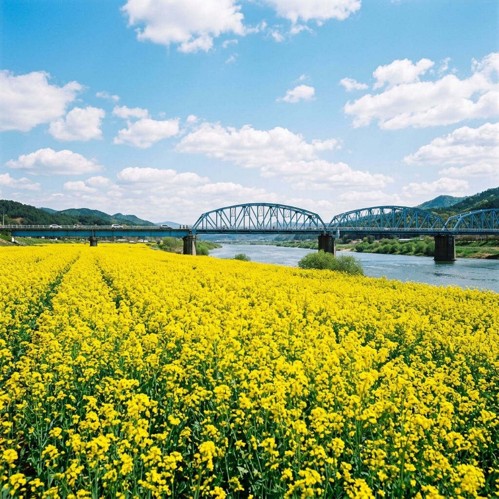
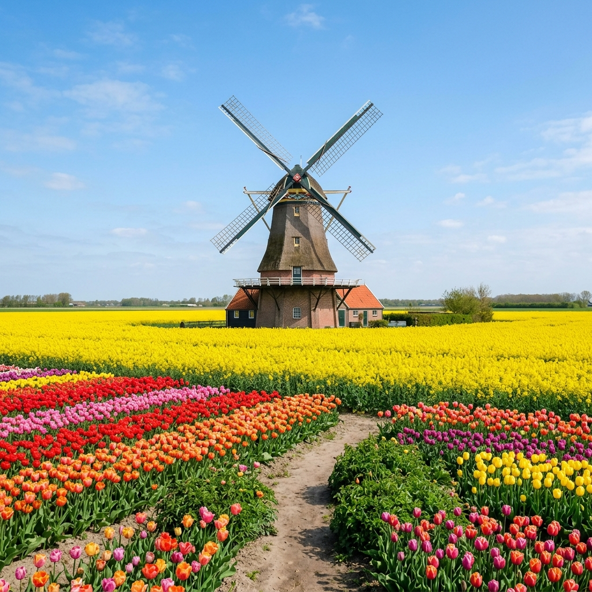

창녕 낙동강 유채축제 2026 — 33만 평 노란 물결, 실시간 개화 상황 및 주차 꿀팁 완벽 가이드
"이번 주말, 대한민국에서 가장 큰 노란 바다가 열립니다!"
드디어 기다리던 제21회 창녕 낙동강 유채축제가 2026년 4월 9일부터 창녕군 남지읍 낙동강변에서 개최됩니다. 33만 평이라는 압도적인 규모, 끝없이 펼쳐진 유채꽃의 향연은 일상의 스트레스를 한 번에 날려버리기에 충분한데요. 오늘은 축제 가기 전 반드시 알아야 할 팩트 체크와 주차 명당, 그리고 인파를 피해 인생샷을 남길 수 있는 숨은 포인트까지 총정리해 드립니다.

▲ 낙동강의 푸른 물결과 노란 유채꽃, 그리고 남지철교가 어우러진 환상적인 풍경입니다.
1. 제21회 창녕 낙동강 유채축제 팩트 시트 (일정 & 장소)
창녕 낙동강 유채축제는 단일 면적으로 전국 최대 규모를 자랑하는 봄꽃 축제입니다. 2006년 제1회를 시작으로 올해 21회째를 맞는 명실상부 경남의 대표 축제죠. 낙동강과 남지철교가 어우러진 풍경은 사진작가들 사이에서도 최고의 출사지로 손꼽힙니다.
| 항목 |
상세 내용 |
| 기간 |
2026. 04. 09.(목) ~ 04. 12.(일) [4일간] |
| 장소 |
경남 창녕군 남지읍 남지체육공원 및 유채단지 일원 |
| 입장료 |
무료 (체험 프로그램 등 일부 유료) |
| 주요 테마 |
유채꽃밭 산책, 낙동강 용왕대제, 불꽃쇼, 열기구 체험 등 |
TIP: 축제 기간 중 가장 인파가 몰리는 시간은 토요일/일요일 오후 1시~4시 사이입니다. 여유로운 관람을 원하신다면 금요일 평일이나 주말 오전 9시 이전 도착을 강력 추천합니다!
2. 2026년 실시간 개화 상황 (4월 6일 기준)
현재 창녕 남지 유채단지의 개화율은 약 85~90% 수준입니다. 지난주 따뜻한 기온 덕분에 꽃망울이 일제히 터지기 시작했는데요. 축제 개막일인 4월 9일에는 100% 만개할 것으로 보입니다. 이번 주말이 가장 화려한 '황금빛 바다'를 볼 수 있는 절정의 시기라고 확신합니다.
올해는 예년보다 유채의 키가 조금 더 커서 꽃밭 사이로 들어가 사진을 찍으면 인물이 꽃 속에 파묻힌 듯한 몽환적인 분위기를 연출할 수 있습니다. 다만, 꽃 가루가 옷에 묻을 수 있으니 고가의 의류보다는 활동적인 밝은색 계열의 옷을 추천드립니다.
3. 일자별 주요 프로그램 안내 — 놓치면 후회할 Best 3
4일 동안 열리는 축제는 매일 색다른 매력을 선사합니다. 특히 올해는 가족 단위 방문객을 위한 참여형 프로그램이 대폭 강화되었습니다.
① 4월 10일(금) - 화려한 개막식과 불꽃쇼
축제의 시작을 알리는 개막식과 함께 밤하늘을 수놓는 불꽃쇼가 예정되어 있습니다. 낙동강 물결에 반사되는 불꽃과 노란 유채꽃의 조화는 1년에 단 한 번만 볼 수 있는 장관입니다.
② 4월 11일(토) - 창녕남지개비리 걷기대회
낙동강변의 수려한 절경을 따라 걷는 '개비리길' 걷기대회는 건강과 힐링을 동시에 챙길 수 있는 프로그램입니다. 좁은 절벽 길 아래로 굽이치는 강물을 보며 걷는 이색적인 경험을 놓치지 마세요.
③ 상설 운영 - 열기구 & 동춘서커스
하늘 위에서 33만 평의 유채꽃밭을 내려다보는 열기구 체험은 아이들에게 잊지 못할 추억을 선사합니다. 또한 전통의 동춘서커스 공연도 상설로 열려 어르신들에게는 추억을, 젊은 층에게는 이색적인 볼거리를 제공합니다.
주요 포토존 명당 5선
- 남지철교(블루 브릿지): 푸른 철교를 배경으로 유채꽃을 담으면 색감이 대조되어 사진이 정말 잘 나옵니다.
- 네덜란드 풍차: 유채꽃밭 중간에 위치한 노란 풍차는 마치 유럽 여행을 온 듯한 착각을 줍니다.
- 태극기 정원: 유채와 튤립으로 조성된 거대한 태극기 모양 정원은 위에서 내려다볼 때 가장 아름답습니다.
- 산토끼 & 따오기 조형물: 창녕의 상징인 따오기와 산토끼 조형물은 아이들의 고정 포토 스팟입니다.
- 낙동강 둑길: 높은 곳에서 전체적인 유채꽃 바다를 한눈에 담기에 좋습니다.

▲ 꽃밭 곳곳에 설치된 풍차와 조형물들이 이국적인 정취를 더해줍니다.
4. 인파를 피하는 주차 & 교통 전략 (현지인 꿀팁)
창녕 유채축제의 최대 난관은 바로 '주차'입니다. 축제장인 남지체육공원 앞은 주말이면 주차 전쟁터로 변하는데요. 아래 루트를 참고해 보세요.
- 제1주차장 (남지체육공원 정문): 행사장이 가장 가깝지만 가장 먼저 만차됩니다. (오전 9시 이전 권장)
- 제2주차장 (임시 주차장): 무료 어린이 놀이터가 위치해 있어 가족 여행객에게 좋습니다. 공간이 비교적 넓습니다.
- 남지읍사무소/남지교 일대: 축제장에서 도보로 10~15분 정도 걸리지만, 나갈 때 정체를 피하기에는 오히려 유리합니다.
대중교통 이용 시: 남지시외버스터미널에서 축제장까지 도보로 약 10~15분 거리입니다. 시외버스를 이용하면 주차 스트레스 없이 축제를 온전히 즐길 수 있습니다.
5. 축제장 주변 현지인 맛집 3선
꽃구경만큼 중요한 것이 바로 먹거리죠! 창녕 남지 현지인들이 추천하는 실패 없는 맛집을 소개합니다.
① 남지 원조 메기국
창녕의 향토 음식인 메기국입니다. 얼큰하면서도 구수한 국물이 일품이며, 어르신들의 입맛을 사로잡는 보양식입니다.
② 장마을 수제비
직접 담근 장으로 맛을 낸 수제비와 파전이 별미입니다. 축제장에서 걷느라 지친 몸을 따뜻하게 녹여주는 맛이죠.
③ 우포 따오기 빵
창녕의 명물 따오기 모양의 빵입니다. 팥앙금이 들어간 달콤한 맛으로 아이들 간식이나 지인 선물용으로 인기가 높습니다.
[이미지: 낙동강 야경과 함께 어우러지는 화려한 불꽃놀이]
(AI Image Prompt: Vibrant fireworks exploding in the night sky over a golden canola field and reflecting on the Nakdong River. Festive atmosphere. ratio 1:1)
▲ 밤에도 멈추지 않는 창녕의 아름다움, 화려한 조명과 야경을 즐겨보세요.
6. 여행 코스 추천: 창녕 1박 2일 완벽 루트
유채꽃만 보고 가기 아쉽다면? 창녕의 다른 명소와 연계한 완벽한 1박 2일 코스를 제안합니다.
1일차: 창녕 낙동강 유채축제 즐기기 → 남지철교 산책 → 낙동강 노을 감상 → 남지읍 미식 투어
2일차: 우포늪 (새벽 안개와 나룻배) → 화왕산 자락 산책 → 산토끼 노래동산 (가족 추천) → 귀가
안내 및 주의사항
본 포스팅은 제21회 창녕 낙동강 유채축제 공식 안내 자료와 현지 개화 상황을 바탕으로 작성되었습니다. 기상 상황에 따라 프로그램 운영 및 개화 시기가 일부 유동적일 수 있으니, 방문 전 창녕군청 공식 홈페이지를 재확인하시기 바랍니다. 특히 주말에는 차량이 매우 혼잡하므로 안전사고에 유의하시고, 쓰레기는 반드시 지정된 장소에 버려주시는 성숙한 시민 의식을 부탁드립니다.
👉 함께 읽으면 좋은 글: [2026 국내 4월 축제 지도 — 벚꽃부터 수선화까지 총정리]
태그:
#창녕낙동강유채축제
#창녕유채축제
#남지유채꽃축제
#경남4월가볼만한곳
#2026축제일정
#유채꽃개화시기
#낙동강여행
#창녕맛집
#국내봄여행지추천
#인생샷명소
#가족나들이장소
#남지철교
#낙동강개비리길
#창녕가볼만한곳
#봄꽃축제